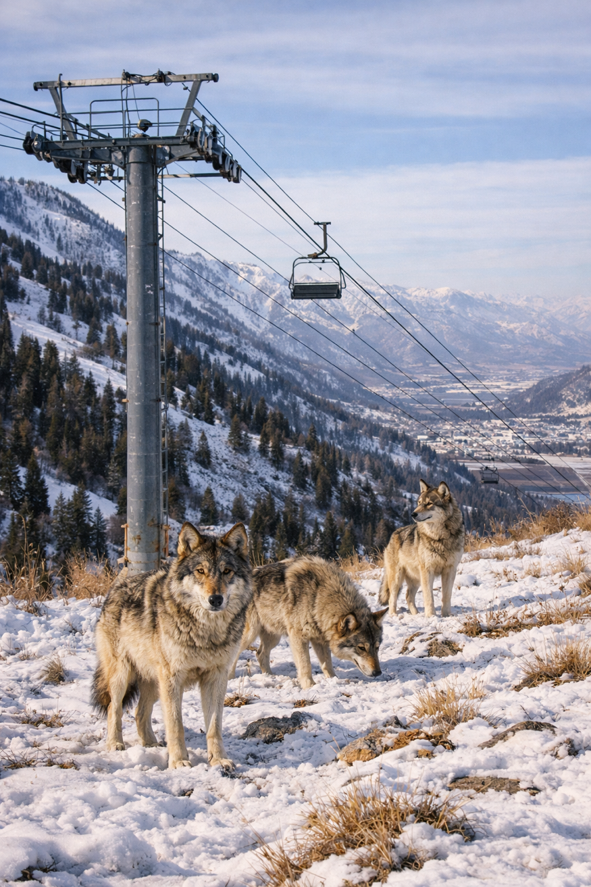

Science-driven rewilding
Gray wolves were extirpated from Utah by the 1930s. We use population genomics, habitat modeling, and open science to build the case for their return and to ensure it succeeds.
Arches National Park · San Juan County
Using whole-genome sequencing data to identify the optimal source population for reintroduction — minimizing inbreeding, maximizing long-term viability.
Quantifying prey base, connectivity corridors, and human conflict risk to build a spatially explicit case for where wolves can thrive in Utah.
All pipelines, data, and findings are published openly. Peer-reviewed preprints, public code repositories, and accessible public education.

Pack behavior & ecology
The reintroduction of gray wolves to Yellowstone in 1995 produced one of the most studied trophic cascades in ecology. Elk changed their grazing behavior, riparian vegetation recovered, stream banks stabilized, and beaver populations rebounded within a decade.
Utah's landscapes — the Uinta highlands, the High Plateaus, the canyon country of San Juan County — present a structurally similar opportunity. The prey base is there. The terrain is there. What's missing is the predator that shaped it.
Wasatch Range · Northern UtahResearch
All research is conducted using publicly available whole-genome sequencing data and open-source tools. Pipelines are published on GitHub and designed to be reproduced and extended.
Population genomics
Whole-genome PCA, ADMIXTURE, FST, and runs-of-homozygosity inbreeding analysis across Rocky Mountain wolf populations. Goal is to identify the best genetic source for a Utah reintroduction program.
In progressBioinformatics tools
A Snakemake pipeline wrapping GATK, PLINK, ADMIXTURE, and VCFtools for end-to-end population genomic analysis. Built to run on publicly available SRA data without requiring HPC infrastructure.
In progressHabitat modeling
Species distribution modeling using GBIF occurrence data, ungulate biomass estimates, terrain analysis, and human conflict risk. Output will be spatially explicit habitat suitability maps for Utah.
Planned Q3Policy analysis
A review of ESA delisting history, Utah state law, tribal consultation requirements, and the Section 10(j) experimental population pathway that would most likely govern a formal reintroduction.
Planned Q3Ancient DNA
Analysis of publicly available ancient wolf genomic data to characterize pre-extirpation diversity levels in this region and set meaningful targets for what a restored population should look like.
Planned Q4Public education
A public data portal pulling together verified sightings, habitat data, and genomic findings in one place. Built for educators, journalists, and anyone following the reintroduction conversation.
Planned Q4Analysis pipeline — current status
Wolf map
Documented wolf occurrences in and around Utah since 2011, alongside modeled habitat suitability zones.
About
I'm a Biotechnology student at Utah Valley University. I work on the computational and scientific case for gray wolf reintroduction in Utah, building population genomics pipelines, designing CRISPR analysis tools, and translating that work into public-facing research.
This project started as a personal interest and turned into a structured research program. I build open-source tools for population genomic analysis, write preprints on wolf population structure and reintroduction feasibility, and try to make the underlying science accessible to people outside academia.
I founded Rewild Genomics LLC to support this work through grants and eventual wet-lab partnerships.
Get involved
Whether you're a researcher, educator, journalist, policymaker, or Utah resident who cares about wolves — there's a way to contribute.
✓ Message received — I'll be in touch soon.